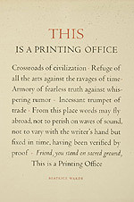
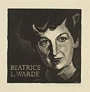

Beatrice L. Warde
American, 1900-1969
The typographer, writer, and historian of printing Beatrice Warde
was educated at Barnard College, Columbia, where she developed an interest
in calligraphy and letterforms. From 1921-1925 Warde was the assistant
librarian at the American Type Founders Company, pursuing her research
into typefaces and the history of printing. In 1925 she married the
book and type designer Frederic Warde, Director of Printing at the
Princeton University Press. The couple moved to Europe, where Beatrice
worked on The Fleuron: A Journal of Typography, then edited
by Stanley Morison. Her reputation was established by an article
she published
in the 1926 issue The Fleuron, written under the pseudonym
"Paul Beaujon," which traced types mistakenly attributed
to Garamond back to Jean Jannon of Sedan. In 1927 she became editor
of The
Monotype Recorder, in London. Beatrice Warde was a believer
in the power of the printed word to defend freedom, and she designed
and printed her
famous manifesto, This Is A Printing Office, in 1932, using
Eric Gill's Perpetua typeface. She rejected the avant-garde in typography,
believing
that classical forms provided a "clearly polished window" through
which ideas could be communicated. The Crystal Goblet: Sixteen
Essays on Typography (1955) is an anthology of her writings.

This Is a Printing Office, by Beatrice Warde, 1932.
Broadside.
"Set in Centaur and Arrighi types by Westcott & Thomson and reprinted
for the Type Directors Club of New York on the occasion of their
dinner honoring Mrs. Warde on April 28, 1950"
Graphic Arts Division

Portrait of Beatrice L. Warde, by Bernard Brussel-Smith.
1950.
Wood engraving on Basingwerk Parchment.
Signed with initials in block and in pencil on sheet, lower right.
Graphic Arts Division
Other works in the exhibition:
- The Fleuron: A Journal of Typography,
Cambridge, England: At the University Press; New York: Doubleday
Doran, 1923-1930.
No. VI, 1928, containing an article by Paul Beaujon (pseudonym
of Beatrice Warde), "On Decorative Printing in America" Limited
edition on hand-made Batchelor Kelmscott paper.
Binding and end papers for no. 6 designed by Lucian Bernhard, Berlin.
Graphic
Arts Division
- Beatrice/Paul/Warde/Beaujon: Quotations from the Writings of
Beatrice Warde,
Maple Shade, New Jersey: Printed by John Anderson, The Pickering
Press, 1953.
Graphic Arts Division
- The Crystal Goblet: Sixteen Essays on Typography, by Beatrice
Warde.
London: Sylvan Press, 1955.
Graphic Arts Division